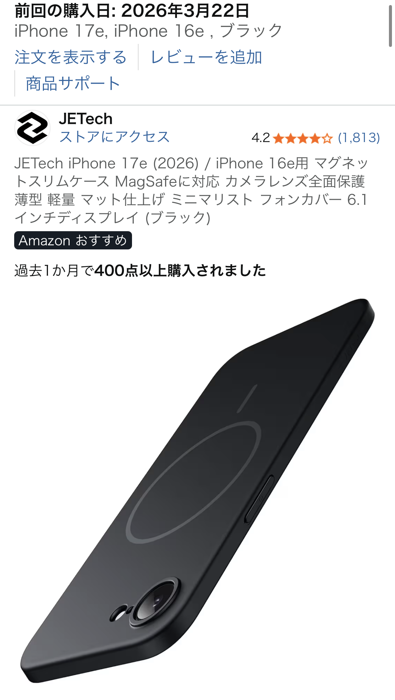

薄くて良い感じの「MagSafe対応iPhoneケース」総合レビュー
今回レビューするのは、薄くて軽いタイプのMagSafe対応iPhoneケースです。実際に使ってみると、まず手に取った瞬間に「ケースを付けているのに厚みをほとんど感じない」という印象が強く、ポケットやバッグへの出し入れもスムーズでした。
ケース表面はサラッとした質感で、指紋がつきにくく、ベタつきが気になる方にも向いています。特に、ガラスフィルムと組み合わせたときの一体感が高く、見た目もミニマルに仕上がるのが好印象でした。
また、MagSafeアクセサリとの相性も良好で、マグネットの吸着力は日常使いには十分。スタンド付きのMagSafe充電器や、カードウォレットを装着してもズレにくく、動画視聴やキャッシュレス決済が快適にこなせます。薄さと機能性のバランスが取れた、いわゆる「普段使いのベストバイ候補」と言えるケースです。
実際に感じたデメリット｜端部がややめくれやすい点には注意
一方で、良い点ばかりではありません。口コミにもある通り、上下左右の端部はややめくれやすい印象があります。特に、ポケットから出し入れする際や、カバンの中で他の物と擦れる場面では、画面側の縁が少し浮いたように感じることがありました。
ただし、四隅のフィット感はしっかりしているため、「ケースが勝手に外れてしまう」「気づいたら外れていた」という不安は少ないです。落下時の保護性能を最優先する“耐衝撃ゴリゴリ系ケース”と比べると安心感は劣りますが、薄さと軽さを重視するユーザーにとっては、許容範囲のデメリットと言えます。
端部のめくれやすさが気になる方は、ズボンの前ポケットではなく、バッグの専用ポケットに入れる、あるいは画面側を内側に向けて収納するなど、使い方を少し工夫するとストレスが減ります。
指紋の付きにくさと磁力のバランスがちょうど良い
このケースの強みとして外せないのが、指紋の付きにくさとMagSafe磁力のバランスです。光沢のあるクリアケースだと、どうしても指紋や皮脂汚れが目立ちがちですが、本ケースはマット寄りの仕上げで、長時間使っても見た目が汚くなりにくいのが魅力です。
磁力についても、「強すぎず、弱すぎない」ちょうど良さがあります。MagSafe充電器に置いたときはしっかり固定される一方で、外すときに必要以上の力は要らないため、毎日の充電がストレスになりません。車載ホルダーやスタンド一体型アクセサリを多用する方にも扱いやすいバランスです。
他の有名な中華系ケースメーカーとの比較
iPhoneケース市場には、ESRやSpigenなどをはじめとした有名な中華系・海外系ブランドが多数存在します。そうしたメーカーのケースは、耐衝撃性能やデザインバリエーションが豊富で、価格も比較的手頃なものが多いのが特徴です。
それらと比べたとき、本ケースは「薄さ・軽さ・シンプルさ」に特化したタイプと言えます。ゴツゴツしたバンパー形状や派手なロゴはなく、あくまで「iPhone本体のデザインを活かしつつ、必要最低限を守る」方向性。
耐衝撃性だけを見れば、分厚いケースに軍配が上がる場面もありますが、日常の持ち運びや見た目のスッキリ感では決して負けていないと感じました。
また、指紋の付きにくさやMagSafeの使い勝手という点では、価格帯の近い中華系ケースと十分に競合できるレベルです。「ブランド名よりも、実用性とミニマルな見た目を重視したい」という方には、かなり有力な選択肢になるでしょう。
こんな人におすすめ｜薄さ重視のiPhoneユーザー向け
以上を踏まえると、この薄型MagSafe対応iPhoneケースは、次のような方に特におすすめできます。
- できるだけ薄くて軽いiPhoneケースを探している人
- MagSafe充電器やカードウォレットを日常的に使う人
- 指紋やベタつきが少ない、サラッとした質感が好みの人
- ゴツい耐衝撃ケースよりも、見た目のスッキリ感を優先したい人
逆に、アウトドアや現場仕事などで落下リスクが高い環境で使う場合は、より分厚い耐衝撃ケースの方が安心です。その意味で、本ケースは「日常使いでの快適さと見た目のスマートさを重視するユーザー向け」のモデルと言えます。
まとめ｜薄さとMagSafeを両立した“普段使い向け”ケース
薄くて軽いMagSafe対応iPhoneケースは、端部がややめくれやすいという弱点こそあるものの、四隅のフィット感・指紋の付きにくさ・MagSafeアクセサリとの相性など、日常使いで重要なポイントをしっかり押さえたバランスの良いケースでした。
「iPhone本来の薄さやデザインを損ないたくない」「MagSafeアクセサリを快適に使いたい」という方にとっては、価格以上の満足度が期待できる選択肢です。気になる方は、最新の価格や在庫状況をチェックして、自分の使い方に合うかどうかを検討してみてください。
薄型MagSafe対応iPhoneケースをAmazonでチェックする
※本記事の内容は、実際の使用感や口コミをもとにした個人的なレビューです。機能・仕様・価格は変更される場合があります。最新情報はAmazonの商品ページにてご確認ください。